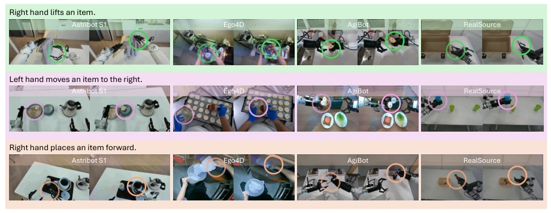
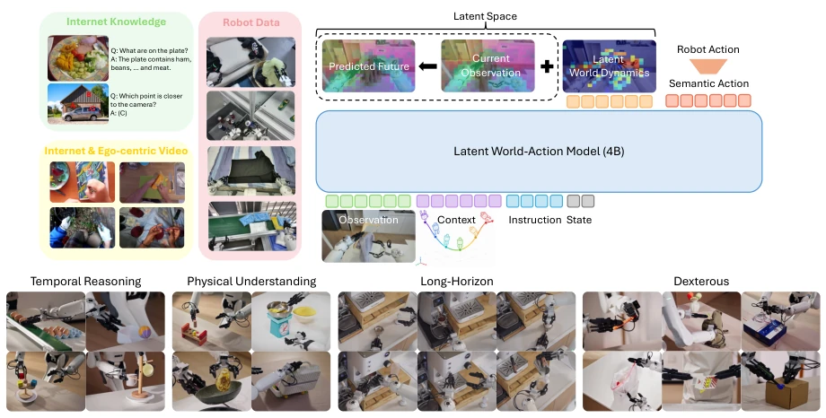
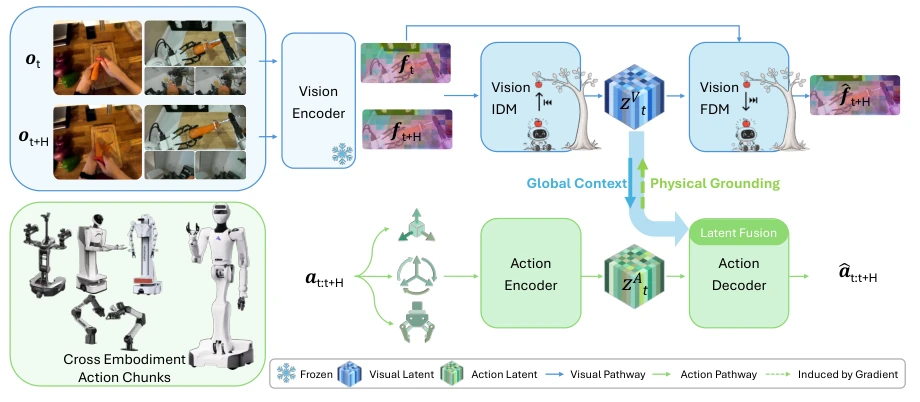
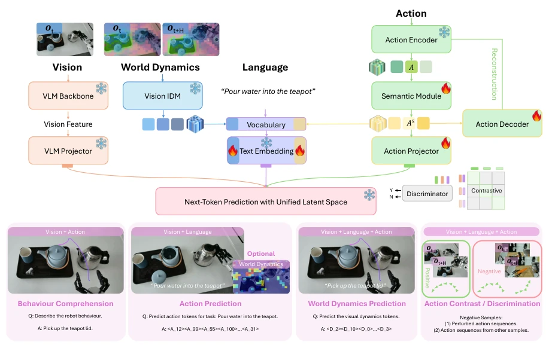
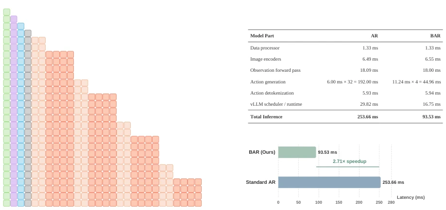
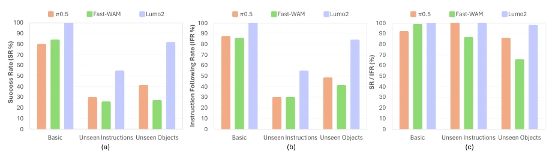
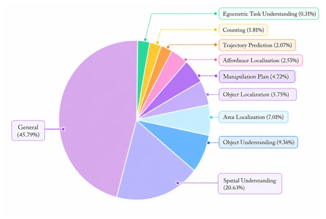
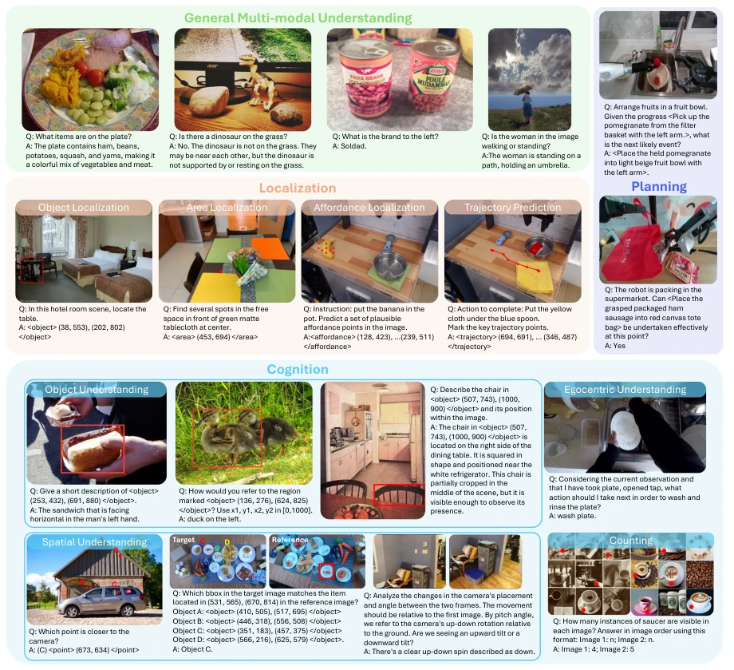
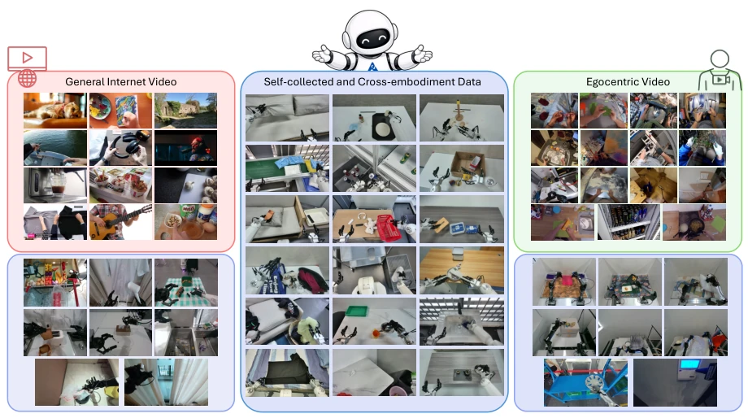
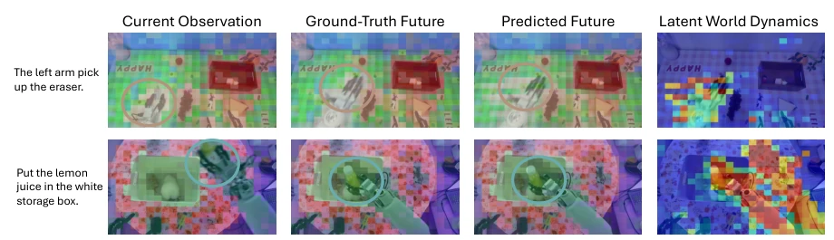

Lumo-2 attempts to replace Lumo-1's explicit text reasoning with latent space reasoning; this move is quite clever, saving tokens and increasing speed. However, hard-aligning actions and visual dynamics is like making two people who do not speak the same language dance the tango, presenting considerable difficulty. Although claimed to be scalable, it relies on massive heterogeneous data cleaning, and the actual deployment cost may not be low. BAR acceleration is indeed beneficial, with a 2.7x improvement being substantial. However, the interpretability of this black-box latent space is questionable; if dynamics prediction deviates, actions will go awry. Overall, this is a solid fusion of the VLA and WAM routes, but do not expect it to solve all long-horizon planning problems; physical common sense still relies on data accumulation. Although this implicit reasoning is efficient, debugging may be more challenging than explicit planning, after all, it is difficult to tell the latent space not to knock over the cup.
研究动机Motivation
现有 VLA 和 WAM 模型在动作模态对齐上存在严重缺陷。动作作为连续控制信号，与视觉、语言的统计特性差异巨大，导致联合训练不稳定（Bi et al., 2025; Black et al., 2024）。Lumo-1 虽然用了显式推理，但扩展性差、延迟高（Tang et al., 2025a）。单步观测存在歧义，无法唯一确定动作。需要一种能捕捉物理动态且与动作语义对齐的潜空间，以支持预测性推理和跨模态一致性。图 10 展示了跨本体对齐的潜力，正是本文要解决的核心痛点。此外，现有模型往往忽视动作的语义结构，导致重建质量高但控制性能差，这是本文重点突破的方向。
Existing VLA and WAM models exhibit serious deficiencies in action modality alignment. Actions, as continuous control signals, differ significantly in statistical characteristics from vision and language, resulting in unstable joint training (Bi et al., 2025; Black et al., 2024). Although Lumo-1 employs explicit reasoning, it suffers from poor scalability and high latency (Tang et al., 2025a). Single-step observations contain ambiguity and cannot uniquely determine actions. A latent space capable of capturing physical dynamics and aligning with action semantics is required to support predictive reasoning and cross-modal consistency. Figure 10 illustrates the potential for cross-embodiment alignment, which is the core challenge this paper seeks to address. Additionally, existing models often overlook the semantic structure of actions, resulting in high reconstruction quality but poor control performance, representing the key direction for breakthrough in this work.

Figure 10 | Latent World Dynamics Align Action Semantics Across Embodiments. Examples retrieved from clustered latent world dynamics tokens reveal emergent semantic alignment across diverse robot (Astribot S1, AgiBot, RealSource) and human (Ego4D) domains. Despite substantial differences in robot morphology, camera viewpoints, scene appearance, and end- effector designs, samples within each cluster exhibit consistent action semantics. Groups 1–3 correspond to lifting, transporting, and placing actions, respectively.
The overall approach adopts a three-stage progressive training paradigm. Stage 1 extracts latent world dynamics via a visual inverse dynamics model (IDM), jointly trained with action autoencoders to establish causal connections between actions and physical dynamics. Stage 2 introduces a semantic module, mapping action tokens to a unified semantic space, combined with VLM for multi-task alignment. Stage 3 employs large-scale mixed training, fusing VLM data, video, and robot data to reinforce world knowledge. Architecturally, it is based on Qwen3.5-4B, utilizing VQ codebooks to compress actions and dynamics. During inference, a block autoregressive (BAR) strategy is employed, permitting intra-block attention, which significantly reduces latency. Regarding data, a VLM dataset comprising 53 million samples was constructed, covering tasks such as localization, cognition, and planning. This phased alignment strategy effectively alleviates gradient conflicts in multimodal training, ensuring the physical plausibility of action generation.

Figure 2 | Lumo-2: A Latent World-Action Model for Robotic Manipulation. (1) Co-training: Lumo-2 is co-trained on diverse vision-language data, in-the-wild videos, and robot action data, enabling robust generalization across scenes, objects, and world dynamics. (2) Comprehensive Evaluation: We conduct extensive real-world evaluations on challenging tasks that require temporal reasoning, physical understanding, and high control complexity, including long- horizon and dexterous manipulation.

Figure 3 | Pre-align Action with Latent World Dynamics (Stage 1). We train a vision-based Inverse Dynamics Model (IDM) to encode world dynamics, denoted as 𝑍𝑉 𝑡, from inter-frame visual features extracted by a pre-trained image foundation encoder. By enforcing the visual representation to reconstruct corresponding actions, the model suppresses nuisance factors (e.g., illumination changes and background variations), producing a physically grounded latent space. At the same time, as 𝑍𝐴 𝑡captures global action context, the action encoder is encouraged to model fine-grained action details coherently anchored to this global context.

Figure 4 | Unified Modality Alignment (Stage 2). We transform action tokens into semantically enriched representations and integrate vision and language modalities for unified alignment through multi-task, multi-modal learning.

Figure 8 | BAR Causal Attention Design and Inference Performance. (a) Different colored regions correspond to vision, context, language, state, world dynamics, and action tokens, respectively. World dynamics and action tokens are arranged in alternating temporal order within each block, with block sizes configured as 4 and 8. (b) All latency measurements are conducted via vLLM on a single NVIDIA RTX 5090 GPU, and the proposed BAR decoding delivers a 2.71× end-to-end speedup relative to standard AR decoding.
实验Experiments
在真实世界任务上评估，包括长程操作、灵巧操作及物理理解任务。基线包括 pi0 (Black et al., 2024) 和 Fast-WAM (Bi et al., 2025)。Lumo-2 在未见指令和未见物体上表现显著优于基线。消融实验验证了潜世界动力学和模态对齐对扩展律和分布外泛化的作用。推理延迟从 253ms 降至 93ms。数据混合策略（如 egocentric 视频）有效提升了物理动态理解。实验表明，引入跨本体数据能显著增强模型的泛化能力，使其在不同机器人形态下仍能保持稳定的控制性能，这对实际部署至关重要。
Evaluated on real-world tasks, including long-horizon manipulation, dexterous manipulation, and physical understanding tasks. Baselines include pi0 (Black et al., 2024) and Fast-WAM (Bi et al., 2025). Lumo-2 performs significantly better than baselines on unseen instructions and unseen objects. Ablation studies verify the impact of latent world dynamics and modality alignment on scaling laws and out-of-distribution generalization. Inference latency dropped from 253ms to 93ms. Data mixing strategies (such as egocentric video) effectively enhanced physical dynamics understanding. Experiments demonstrate that introducing cross-embodiment data significantly strengthens the model's generalization capability, allowing it to maintain stable control performance across different robot morphologies, which is critical for practical deployment.

Figure 12 | Experiment Results of Generalizable Pick and Place. As shown in (a) and (b), Lumo-2 consistently outperforms the baseline 𝜋0.5 and Fast-WAM across all three evaluation categories, with significant improvements on unseen instructions and unseen objects, which requires strong reasoning and generalization capabilities. Lumo-2 exhibits enhanced action execution accuracy over 𝜋0.5 and Fast-WAM as reflected by the IFR/SR metric in (c).
其他图片Other Figures

Figure 5 | Distribution of Data Mixture. We curate a VLM dataset comprising roughly 53 million samples that extend general multi-modal understanding with an emphasis on localization, cognition, and planning.

Figure 6 | Overview of Curated Vision-Language Data. The curated dataset is designed to enhance core embodied reasoning abilities while preserving the general multi-modal under- standing and reasoning capabilities of the pre-trained VLM.

Figure 7 | Overview of Video Data Utilized to Learn Broad World Dynamics. The curated dataset encompasses broad sources of general internet video, egocentric video, and self-collected and cross-embodied dataset.

Figure 9 | Visualization of Latent World Dynamics and Observation Features. The first three principal components of the feature representations are projected onto RGB channels for visualization. Latent world dynamics are visualized through the per-patch cosine distance between the predicted future and current observation features, highlighting regions where the model anticipates task-relevant future state changes.